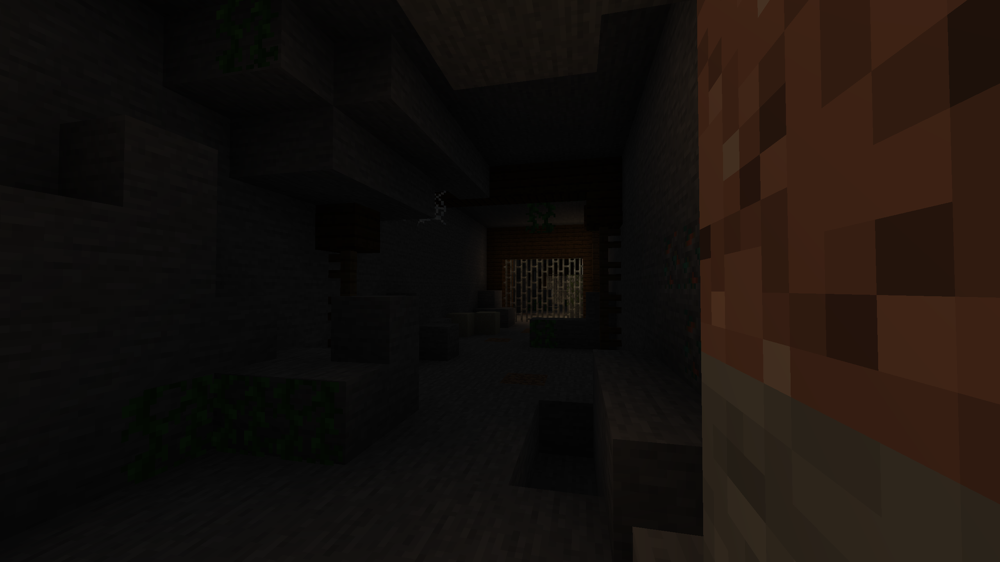
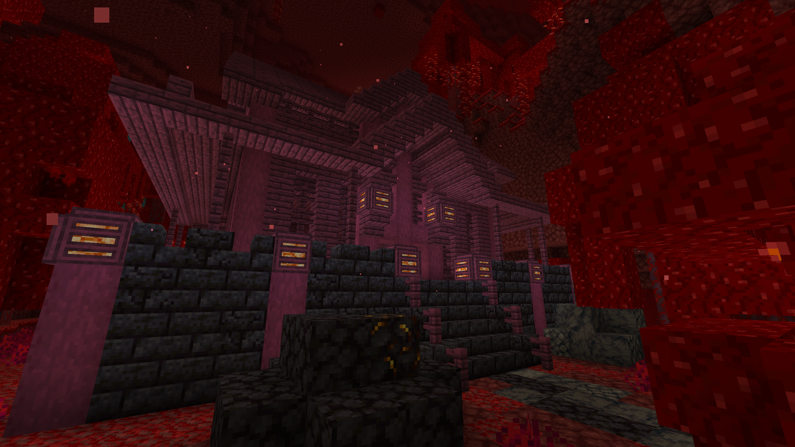
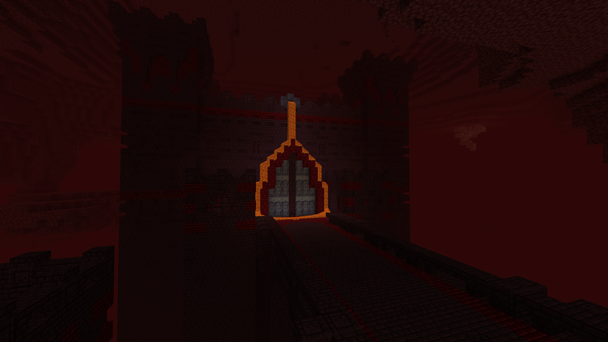
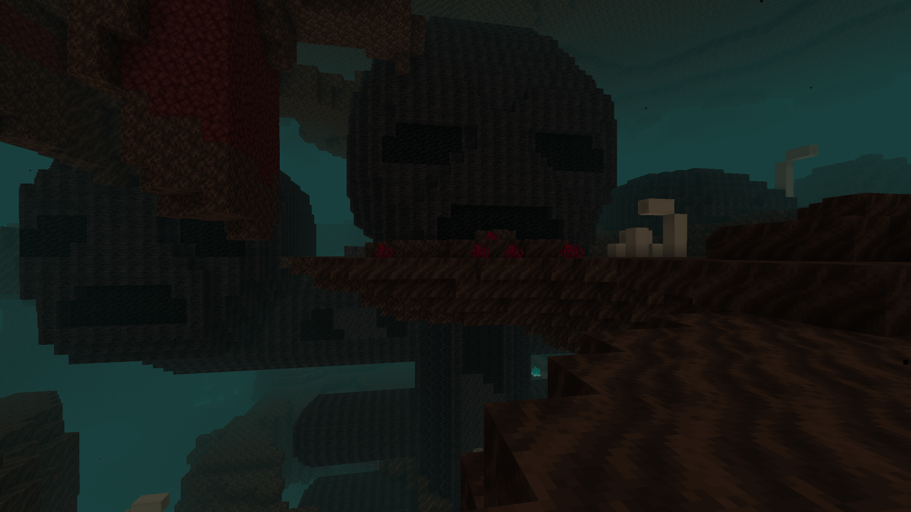
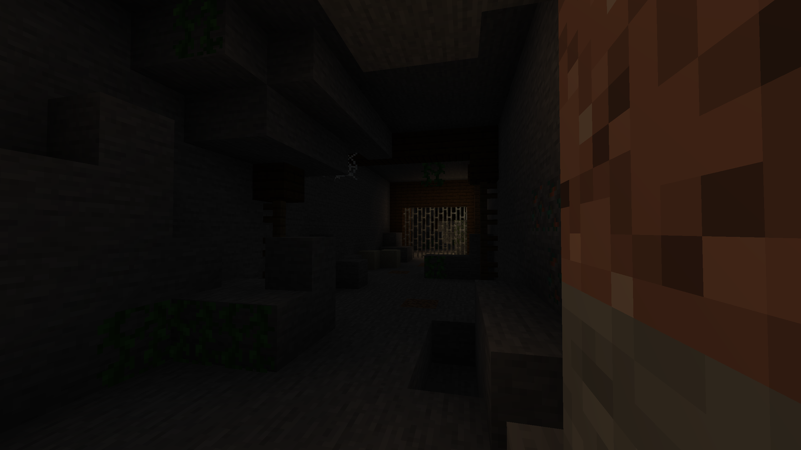
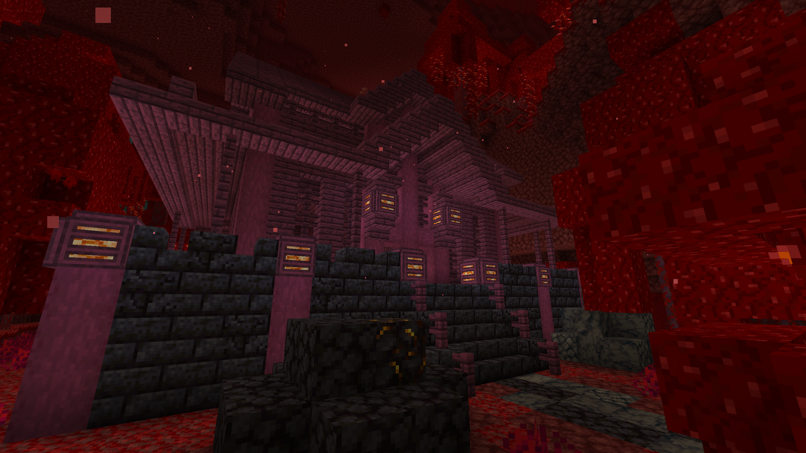
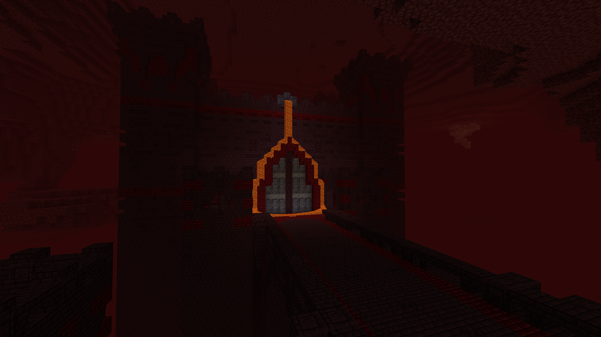
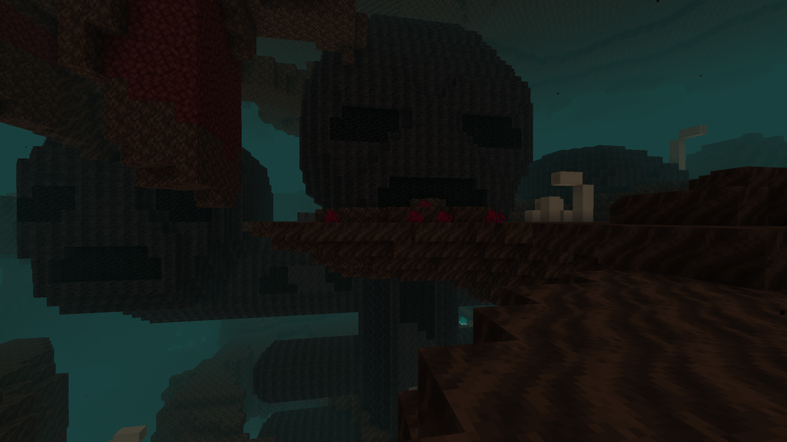


 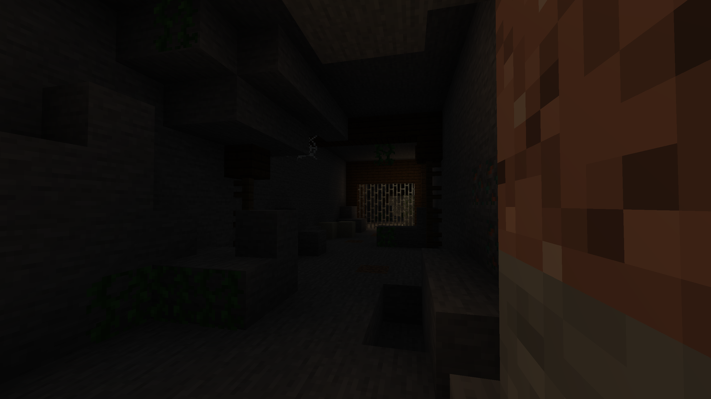
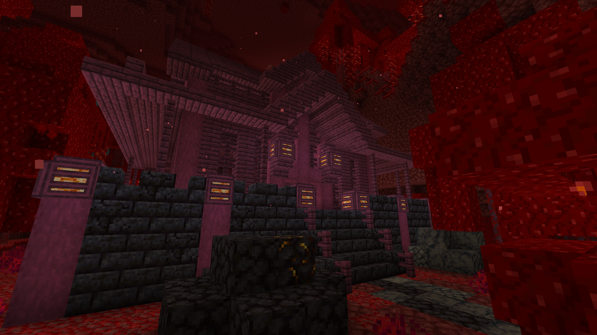
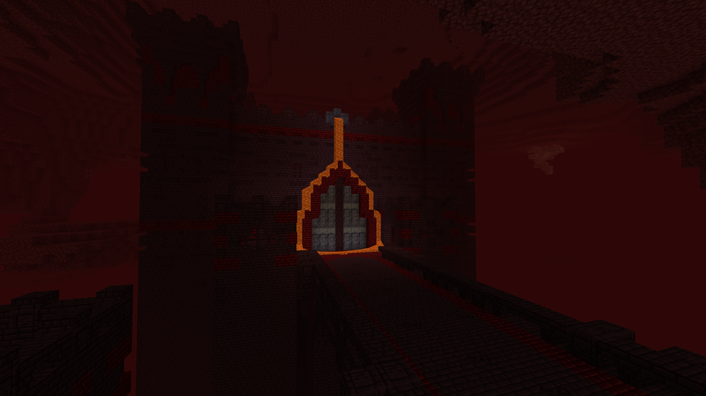
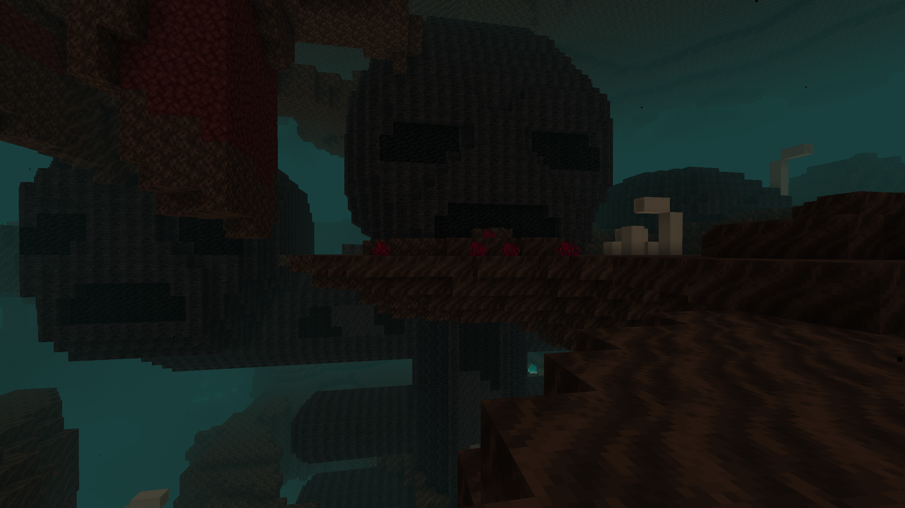
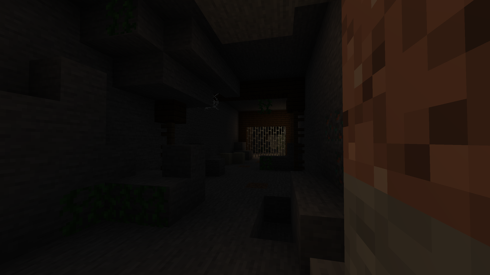
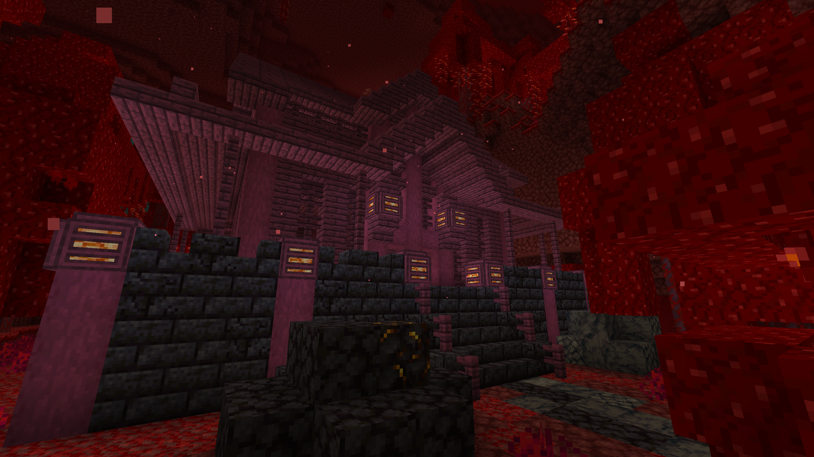
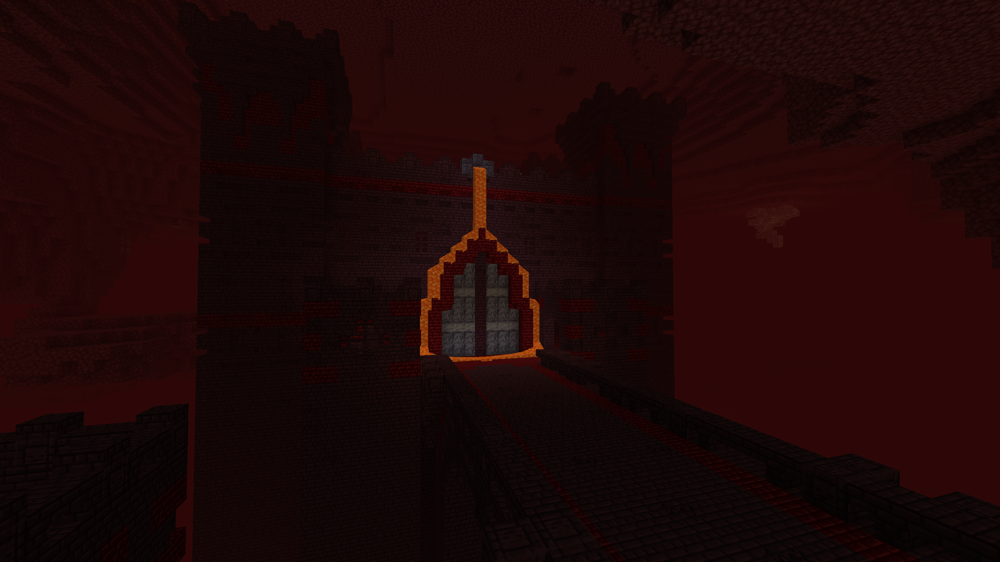
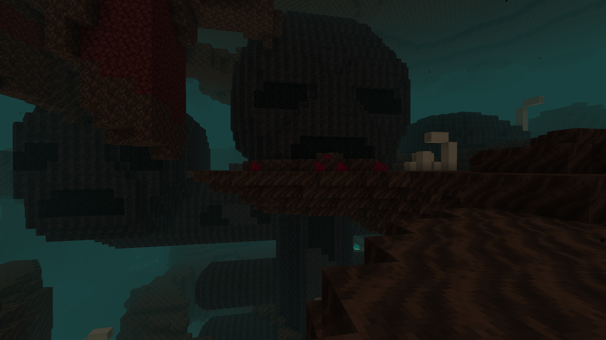
During this time, they're no longer targetted by zmobies or other hostile mobs.
Baby Villgers wandering are actually Trick or Treating,
and will walk up to Villager houses and ask for candy.
They can either receive candy, coal, or nothing.
Each day, they will eat the candy they collected throughout
the night, which will reduce their age slightly,
(making them stay as children for longer), and also
regenerate health, allowing them to safely trick or treat
multiple nights in a row.
The jack o lanterns have custom faces and will only be placed on grass blocks with sky light access. The villagers will also place some other seaonal decor as well, and will be automatically taken down at the end of the season by the villagers.
Villagers will place wreaths on their doors during the season. Baby Villagers will playfully throw snow balls at all nearby entities. Adds sleds, candy cane, candy cane blocks, and glow lights which can be placed on (almost) any leaves.
Clouds will vary in density and size depending on: Weather, Biome, and just sheer randomness. With large structures or mountains, clouds will physically alter their shape to attempt to go around the structure as opposed to through it.
Many rooms found in these fairly common structures would contain very overpowered loot (Netherite Ingots, enchanted equipment, free items that otherwise would be difficult to obtain, so many spawners that you could make a farm for every mob possible, and so on)